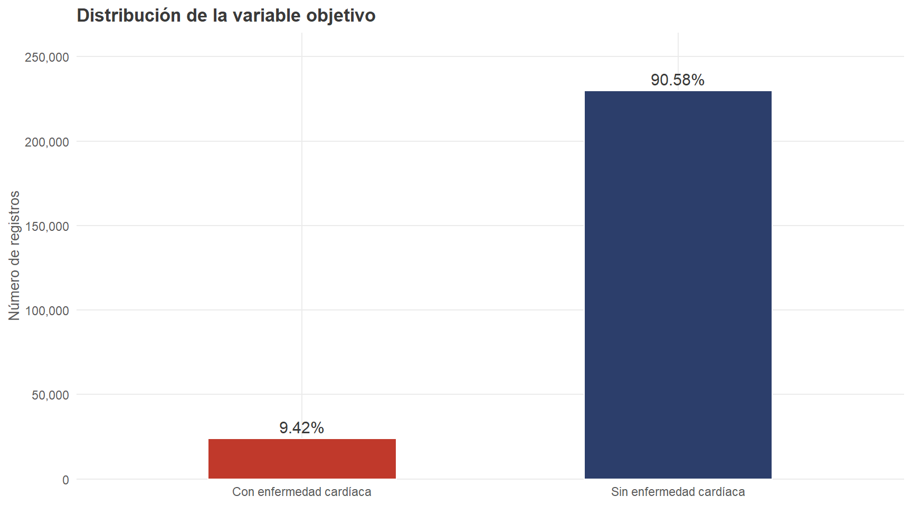
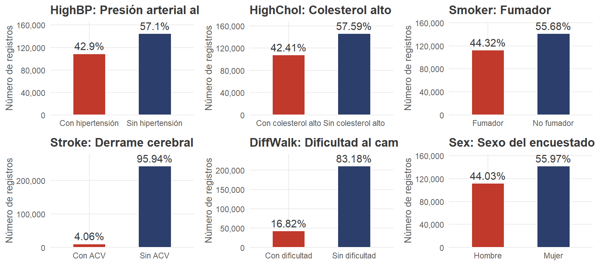
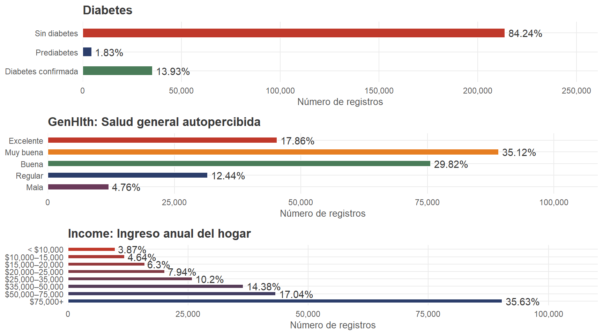
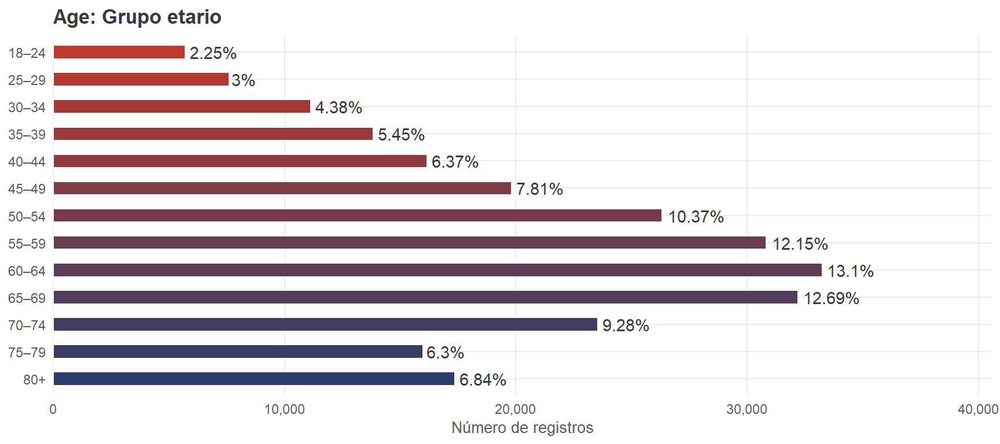
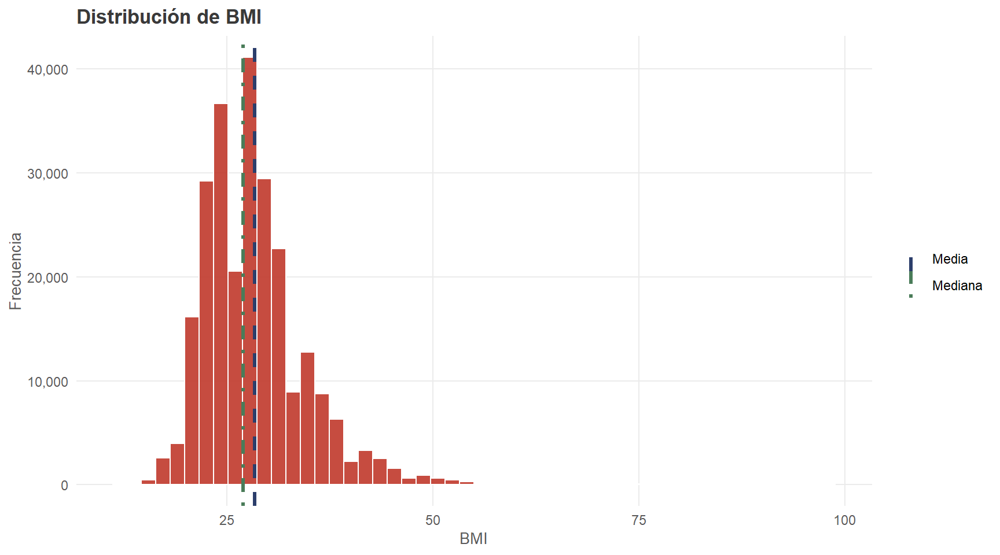
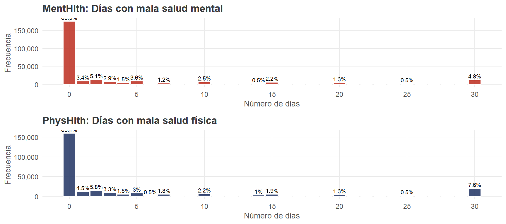

Capítulo 3 Análisis univariado
Se analiza la distribución de cada variable según su naturaleza estadística: barras verticales para binarias, barras horizontales para ordinales, e histogramas/barras por valor exacto para continuas.
3.1 Variable objetivo
plot_binary("HeartDiseaseorAttack",
c("Sin enfermedad cardíaca","Con enfermedad cardíaca"),
"Distribución de la variable objetivo")
Figure 3.1: Distribución de la variable objetivo HeartDiseaseorAttack
La variable objetivo presenta un marcado desbalance de clases: el 90.58% (229.787 personas) no reportó enfermedad cardíaca, frente al 9.42% (23.893 personas) que sí lo hizo. Este desbalance requiere estrategias específicas en el modelado (métricas ajustadas, ajuste de pesos de clase).
3.2 Variables binarias
p1 <- plot_binary("HighBP", c("Sin hipertensión","Con hipertensión"),
"HighBP: Presión arterial alta")
p2 <- plot_binary("HighChol", c("Sin colesterol alto","Con colesterol alto"),
"HighChol: Colesterol alto")
p3 <- plot_binary("Smoker", c("No fumador","Fumador"),
"Smoker: Fumador")
p4 <- plot_binary("Stroke", c("Sin ACV","Con ACV"),
"Stroke: Derrame cerebral")
p5 <- plot_binary("DiffWalk", c("Sin dificultad","Con dificultad"),
"DiffWalk: Dificultad al caminar")
p6 <- plot_binary("Sex", c("Mujer","Hombre"),
"Sex: Sexo del encuestado")
grid.arrange(p1, p2, p3, p4, p5, p6, ncol = 3)
Figure 3.2: Variables binarias seleccionadas
| Variable | N (0) | % (0) | N (1) | % (1) | |
|---|---|---|---|---|---|
| 0 | HighBP | 144,851 | 57.1% | 108,829 | 42.9% |
| 01 | HighChol | 146,089 | 57.59% | 107,591 | 42.41% |
| 02 | CholCheck | 9,470 | 3.73% | 244,210 | 96.27% |
| 03 | Smoker | 141,257 | 55.68% | 112,423 | 44.32% |
| 04 | Stroke | 243,388 | 95.94% | 10,292 | 4.06% |
| 05 | PhysActivity | 61,760 | 24.35% | 191,920 | 75.65% |
| 06 | Fruits | 92,782 | 36.57% | 160,898 | 63.43% |
| 07 | Veggies | 47,839 | 18.86% | 205,841 | 81.14% |
| 08 | HvyAlcoholConsump | 239,424 | 94.38% | 14,256 | 5.62% |
| 09 | AnyHealthcare | 12,417 | 4.89% | 241,263 | 95.11% |
| 010 | NoDocbcCost | 232,326 | 91.58% | 21,354 | 8.42% |
| 011 | DiffWalk | 211,005 | 83.18% | 42,675 | 16.82% |
| 012 | Sex | 141,974 | 55.97% | 111,706 | 44.03% |
3.3 Variables ordinales
p_db <- plot_ordinal("Diabetes",
c("Sin diabetes","Prediabetes","Diabetes confirmada"),
"Diabetes",
colores = c(riesgo_color, nude_palette[2], "#4A7C59"))
p_gh <- plot_ordinal("GenHlth",
c("Excelente","Muy buena","Buena","Regular","Mala"),
"GenHlth: Salud general autopercibida",
colores = c(riesgo_color, "#E67E22", "#4A7C59", nude_palette[2], "#6B3A5A"))
p_inc <- plot_ordinal("Income",
c("< $10,000","$10,000–15,000","$15,000–20,000","$20,000–25,000",
"$25,000–35,000","$35,000–50,000","$50,000–75,000","$75,000+"),
"Income: Ingreso anual del hogar")
grid.arrange(p_db, p_gh, p_inc, ncol = 1)
Figure 3.3: Variables ordinales

Figure 3.4: Distribución por grupo etario
3.4 Variables continuas
3.4.1 BMI
| Metrica | Valor |
|---|---|
| Media | 28.38 |
| Mediana | 27.00 |
| Desv. estándar | 6.61 |
| Q1 | 24.00 |
| Q3 | 31.00 |
| IQR | 7.00 |
| Min | 12.00 |
| Max | 98.00 |
ggplot(df, aes(x = BMI)) +
geom_histogram(bins = 50, fill = riesgo_color, color = "white", alpha = 0.9) +
geom_vline(aes(xintercept = mean(BMI), color = "Media"),
linetype = "dashed", linewidth = 1.2) +
geom_vline(aes(xintercept = median(BMI), color = "Mediana"),
linetype = "dotdash", linewidth = 1.2) +
scale_color_manual(values = c("Media" = nude_palette[2], "Mediana" = "#4A7C59")) +
scale_y_continuous(labels = comma) +
labs(title = "Distribución de BMI", x = "BMI", y = "Frecuencia", color = NULL)
Figure 3.5: Distribución del Índice de Masa Corporal
3.4.2 MentHlth y PhysHlth
p_mh <- df |> count(MentHlth) |> mutate(pct = round(n/sum(n)*100,1)) |>
ggplot(aes(x = MentHlth, y = n)) +
geom_col(fill = riesgo_color, color = "white", alpha = 0.9) +
geom_text(data = ~ filter(.x, pct >= 0.5),
aes(label = paste0(pct,"%")), vjust = -0.4, size = 2.5) +
scale_x_continuous(breaks = seq(0,30,5)) +
scale_y_continuous(labels = comma) +
labs(title = "MentHlth: Días con mala salud mental",
x = "Número de días", y = "Frecuencia")
p_ph <- df |> count(PhysHlth) |> mutate(pct = round(n/sum(n)*100,1)) |>
ggplot(aes(x = PhysHlth, y = n)) +
geom_col(fill = bajo_color, color = "white", alpha = 0.9) +
geom_text(data = ~ filter(.x, pct >= 0.5),
aes(label = paste0(pct,"%")), vjust = -0.4, size = 2.5) +
scale_x_continuous(breaks = seq(0,30,5)) +
scale_y_continuous(labels = comma) +
labs(title = "PhysHlth: Días con mala salud física",
x = "Número de días", y = "Frecuencia")
grid.arrange(p_mh, p_ph, ncol = 1)
Figure 3.6: Distribución de MentHlth y PhysHlth
Ambas variables presentan distribuciones extremadamente asimétricas con concentración en 0 días (MentHlth: 69.3%; PhysHlth: 63.1%) y un repunte en 30 días que refleja el patrón de respuesta redondeada típico del autoreporte.